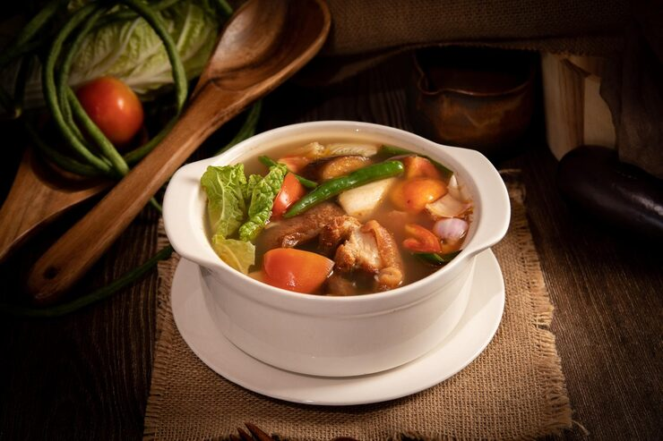

Sinigang

Ingredients
- Vegetable Oil
- Small onion, chopped
- Salt
- Garlic
- Ginger
- Plum Tomato
- 4 cups water
- Pork Chop
- Chicken Broth Cube
Steps
- Heat vegeatable oil and add onion and garlic until softened
- Stir in ginger tomatos and pork chops
- Add water. Bring to a boil then reduce heat and simmer untol pork is tender
- Add vegetables and the sinigang mix.